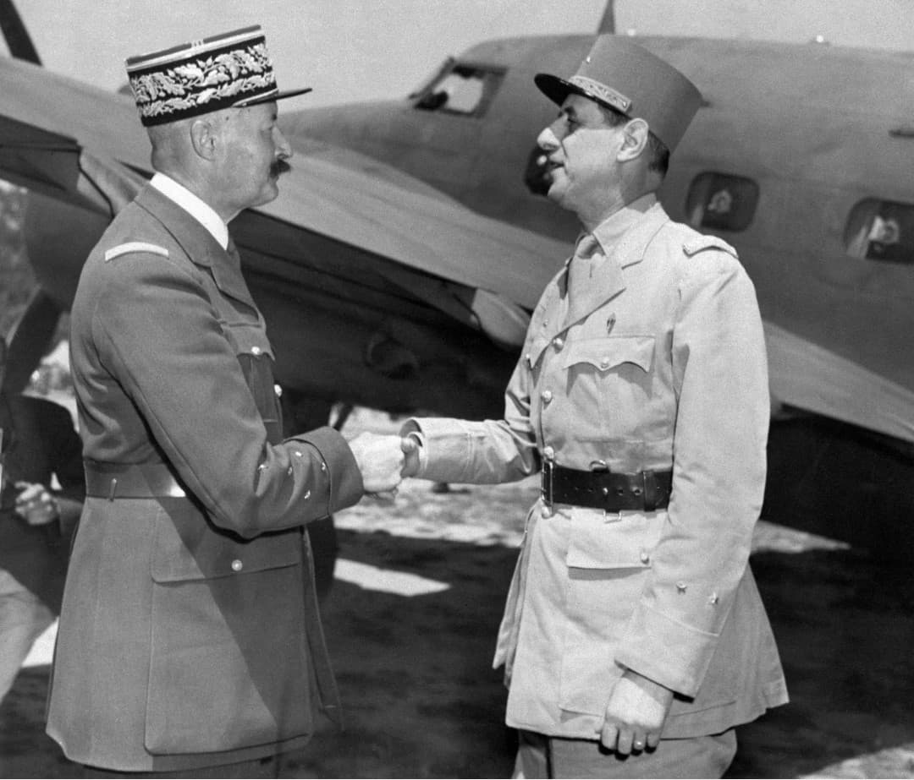
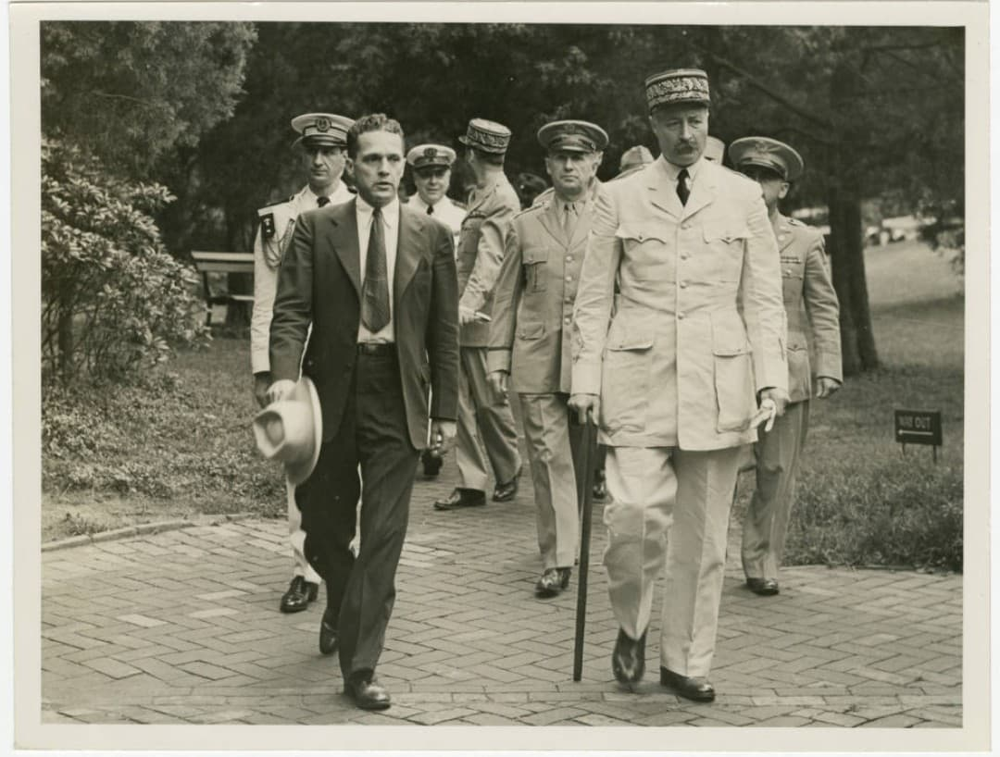
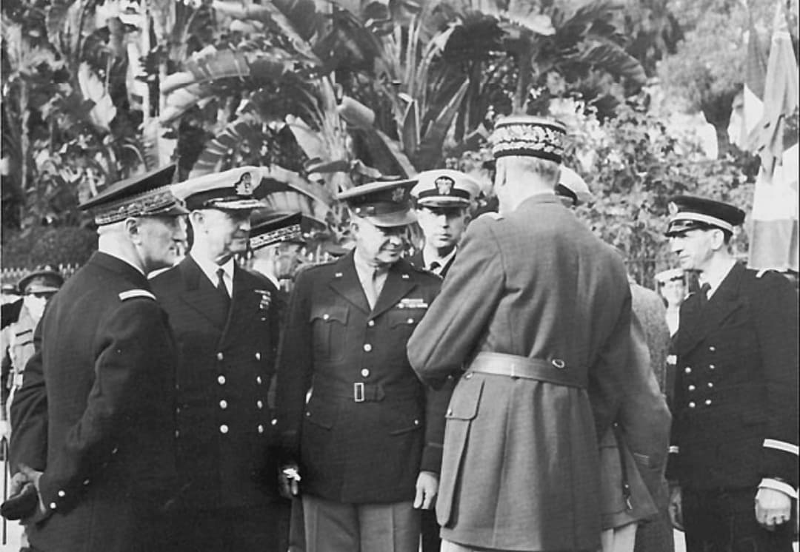
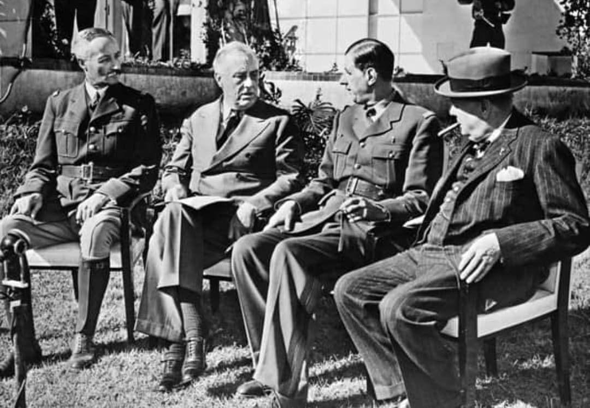

Entre 1942 et 1943, les États-Unis cherchent à orienter la reconstruction de la France libérée selon leurs propres intérêts. Washington refuse de reconnaître Charles de Gaulle, jugé trop indépendant et impossible à contrôler. Les Américains misent alors sur le général Henri Giraud, officier prestigieux mais politiquement fragile, pour tenter d’imposer une France sous influence américaine.

Pour Washington, Giraud présente un profil idéal : anti-Vichy, anti-gaulliste, respecté par l’armée, mais peu à l’aise dans le jeu politique. Les États-Unis veulent un chef militaire discipliné, capable de stabiliser l’Afrique du Nord, tout en restant dépendant de l’aide américaine.
L’objectif est de bloquer l’ascension de De Gaulle et de placer la France libérée dans un cadre politique et militaire contrôlé par les États-Unis.

Après le débarquement allié en Afrique du Nord (opération Torch, novembre 1942), les États-Unis prennent la main sur la région. Pour eux, qui contrôle Alger contrôle la future France libérée. Giraud devient l’instrument principal de cette stratégie : un chef militaire placé à la tête des forces françaises, mais étroitement encadré par les autorités américaines.
Pour renforcer leur influence, les États-Unis introduisent les billets drapeau, une monnaie imprimée en secret pour être imposée dans les territoires français libérés. Chaque billet porte les drapeaux des Alliés, symbolisant une France placée sous tutelle internationale. Pour Washington, contrôler la monnaie, c’est contrôler la reconstruction politique. De Gaulle refusera catégoriquement cette monnaie, dénonçant une tentative de colonisation économique.

Lorsque François Darlan est assassiné, les Américains refusent de confier le pouvoir à De Gaulle et imposent immédiatement Giraud comme chef civil et militaire en Afrique du Nord. Cette décision est perçue par de nombreux résistants comme une ingérence directe dans les affaires françaises.
Pour Washington, Giraud doit devenir le dirigeant de la France libérée, garantissant une France alignée sur les États-Unis et éloignée de l’influence gaulliste.

Malgré le soutien américain, Giraud ne parvient pas à s’imposer politiquement. De Gaulle, porté par la Résistance intérieure et une forte légitimité nationale, prend progressivement l’ascendant au sein du Comité Français de Libération Nationale (CFLN).
Le projet américain d’une France sous influence échoue : Giraud est progressivement écarté, et De Gaulle devient le chef de la France combattante. La tentative de colonisation politique et économique de la France par les États-Unis se heurte à la volonté de souveraineté portée par De Gaulle et la Résistance.